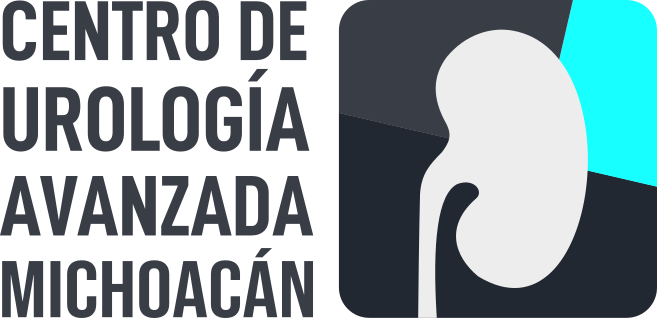

Diagnóstico y tratamientos urológicos
aceptamos tarjetas de crédito
Todos los derechos resevados para Centro de Urología Avanzada Michoacán 2026 ©
Copyright 2026 © Centro de Urología Avanzada Michoacán | Diseño by


En el Centro de Urología Avanzada Michoacán contamos con los mejores urólogos, mediante un diagnóstico oportuno, concreto y acertado, indicamos el tratamiento para los diferentes padecimientos urológicos, siempre tomando en cuenta tus necesidades #HablemosDeTuSalud.
En la actualidad, contar con información disponible es de gran importancia, puede que no seas tu quien presenta los síntomas y estes buscando conocer un poco más sobre los principales problemas urológicos, puedes obtener toda la información relacionada sobre lo que hacemos en el Centro de Urología Avanzada Michoacán puedes estar tranquilo que estarás en buenas manos.
Nuestro equipo médico tiene una gran trayectoria, con + de 30 años de experiencia en el ramo de la urología, nos especializamos en los diferentes padecimientos de las vías urinarias, lo que nos permite realizar diagnósticos más precisos y confiables, como primer paso antes de indicar cualquier procedimiento. Si tienes algún síntoma en las vías urinarias que te preocupe, puedes dejar tus datos y te contactaremos para confirmar disponibilidad.
agenda una citaEn la actualidad, los avances tecnológicos nos permiten realizar procedimientos quirúrgicos con gran precisión y mínima invasión al paciente, que nos brindan la ventaja de un menor tiempo de recuperación, para aliviar los padecimientos urológicos nos especializamos en en 3 tipos de cirugía, endourológica, laparoscópica y robótica.
Cabe mencionar que tratamos padecimientos de menor complejidad que no requieren de esta tecnología, la demanda de cirugías de mínima invasión nos exige mantenernos a la vanguardia, pero tenemos más de 30 años realizando procedimientos quirúrgicos de forma tradicional, por lo que puedes tener plena confianza en que estarás en las mejores manos.
En caso de una urgencia, en cualquier momento, puede ingresar al Hospital La Luz el cual se encuentra ubicado en la Calle General Nicolás Bravo número 50 Colonia Chapultepec Norte en Morelia Michoacán, indicando que requiere ser atendido por el Dr Belisario Torres, de esa forma el personal del hospital se comunicara con el Dr. el cual dará las indicaciones de como atenderlo y en cuanto pueda pasará a ver al paciente al hospital.